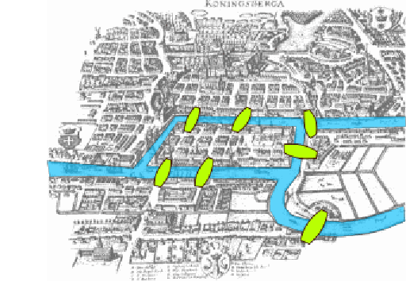
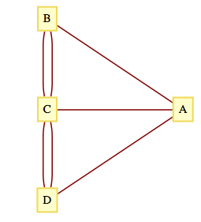
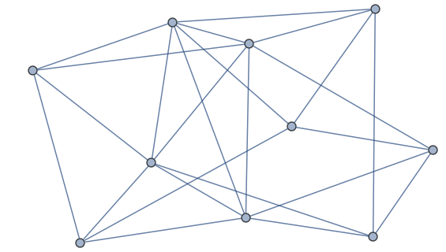
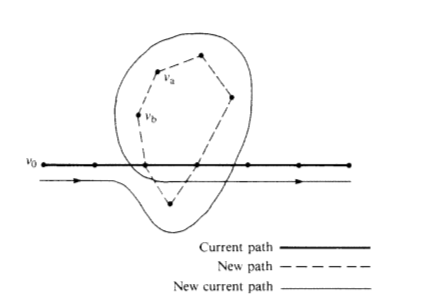
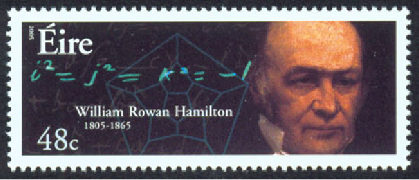
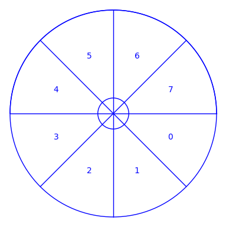
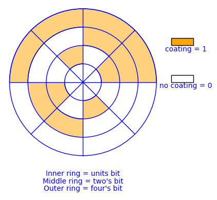
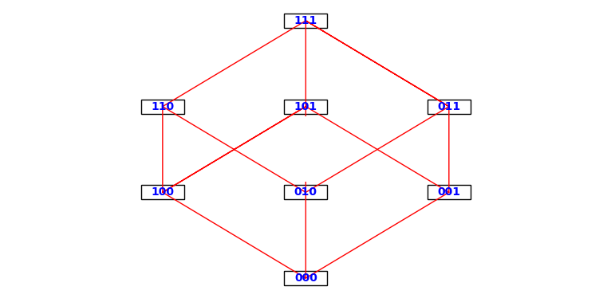
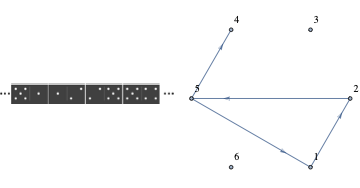

Ken Levasseur, Al Doerr, Michiel Smid, Oscar Levin, Charles M. Grinstead, J. Laurie Snell, Eric Lehman, F. Thomson Leighton, Albert R Meyer, Jeff Erickson, Kenneth P. Bogart, Carol Chritchlow, David Eck, OpenDSA Project, L.J. Miller
Section13.4Traversals: Eulerian and Hamiltonian Graphs
The subject of graph traversals has a long history. In fact, the solution by Leonhard Euler (Switzerland, 1707-83) of the Koenigsberg Bridge Problem is considered by many to represent the birth of graph theory.
Subsection13.4.1Eulerian Graphs
Figure13.4.1.A map of Koenigsberg, circa 1735
Figure13.4.2.A multigraph for the bridges of Koenigsberg
A map of the Prussian city of Koenigsberg (circa 1735) in Figure 1 shows that there were seven bridges connecting the four land masses that made up the city. The legend of this problem states that the citizens of Koenigsberg searched in vain for a walking tour that passed over each bridge exactly once. No one could design such a tour and the search was abruptly abandoned with the publication of Euler’s Theorem.
Theorem13.4.3.Euler’s Theorem: Koenigsberg Case.
No walking tour of Koenigsberg can be designed so that each bridge is used exactly once.
The map of Koenigsberg can be represented as an undirected multigraph, as in Figure 13.4.2. The four land masses are the vertices and each edge represents a bridge.
The desired tour is then a path that uses each edge once and only once. Since the path can start and end at two different vertices, there are two remaining vertices that must be intermediate vertices in the path. If \(x\) is an intermediate vertex, then every time that you visit \(x\text{,}\) you must use two of its incident edges, one to enter and one to exit. Therefore, there must be an even number of edges connecting \(x\) to the other vertices. Since every vertex in the Koenigsberg graph has an odd number of edges, no tour of the type that is desired is possible.
As is typical of most mathematicians, Euler wasn’t satisfied with solving only the Koenigsberg problem. His original theorem, which is paraphrased below, concerned the existence of paths and circuits like those sought in Koenigsberg. These paths and circuits have become associated with Euler’s name.
An Eulerian path through a graph is a path whose edge list contains each edge of the graph exactly once. If the path is a circuit, then it is called an Eulerian circuit. An Eulerian graph is a graph that possesses a Eulerian circuit.
Without tracing any paths, we can be sure that the graph below has an Eulerian circuit because all vertices have an even degree. This follows from the following theorem.

Figure13.4.6.An Eulerian graph
Theorem13.4.7.Euler’s Theorem: General Case.
An undirected graph has an Eulerian path if and only if it is connected and has either zero or two vertices with an odd degree. If no vertex has an odd degree, then the graph is Eulerian.
It can be proven by induction that the number of vertices in an undirected graph that have an odd degree must be even. We will leave the proof of this fact to the reader as an exercise. The necessity of having either zero or two vertices of odd degree is clear from the proof of the Koenigsberg case of this theorem. Therefore, we will concentrate on proving that this condition is sufficient to ensure that a graph has an Eulerian path. Let \(k\) be the number of vertices with odd degree.
Phase 1. If \(k = 0\text{,}\) start at any vertex, \(v_0\text{,}\) and travel along any path, not using any edge twice. Since each vertex has an even degree, this path can always be continued past each vertex that you reach except \(v_0\text{.}\) The result is a circuit that includes \(v_0\text{.}\) If \(k =2\text{,}\) let \(v_0\) be either one of the vertices of odd degree. Trace any path starting at \(v_0\) using up edges until you can go no further, as in the \(k = 0\) case. This time, the path that you obtain must end at the other vertex of odd degree that we will call \(v_1\text{.}\) At the end of Phase 1, we have an initial path that may or may not be Eulerian. If it is not Eulerian, Phase 2 can be repeated until all of the edges have been used. Since the number of unused edges is decreased in any use of Phase 2, an Eulerian path must be obtained in a finite number of steps.
Phase 2. As we enter this phase, we have constructed a path that uses a proper subset of the edges in our graph. We will refer to this path as the current path. Let \(V\) be the vertices of our graph, \(E\) the edges, and \(E_u\) the edges that have been used in the current path. Consider the graph \(G' =
\left(V, E - E_u\right)\text{.}\) Note that every vertex in \(G'\) has an even degree. Select any edge, \(e\text{,}\) from \(G'.\) Let \(v_a\) and \(v_b\) be the vertices that \(e\) connects. Trace a new path starting at \(v_a\) whose first edge is \(e\text{.}\) We can be sure that at least one vertex of the new path is also in the current path since \((V, E)\) is connected. Starting at \(v_a\text{,}\) there exists a path in \((V, E)\) to any vertex in the current path. At some point along this path, which we can consider the start of the new path, we will have intersected the current path. Since the degree of each vertex in \(G'\) is even, any path that we start at \(v_a\) can be continued until it is a circuit. Now, we simply augment the current path with this circuit. As we travel along the current path, the first time that we intersect the new path, we travel along it (see Figure 13.4.8). Once we complete the circuit that is the new path, we resume the traversal of the current path.

Figure13.4.8.Path Augmentation Plan
If the result of this phase is an Eulerian path, then we are finished; otherwise, repeat this phase.
The complete undirected graphs \(K_{2n+1}\text{,}\)\(n = 1, 2, 3, \ldots\text{.}\) .., are Eulerian. If \(n \geq 1\text{,}\) then \(K_{2n}\) is not Eulerian.
Subsection13.4.2Hamiltonian Graphs
To search for a path that uses every vertex of a graph exactly once seems to be a natural next problem after you have considered Eulerian graphs.The Irish mathematician Sir William Rowan Hamilton (1805-65) is given credit for first defining such paths. He is also credited with discovering the quaternions, for which he was honored by the Irish government with a postage stamp in 2005.

Figure13.4.10.Irish stamp honoring Sir William Rowan Hamilton
Definition13.4.11.Hamiltonian Path, Circuit, and Graphs.
A Hamiltonian path through a graph is a path whose vertex list contains each vertex of the graph exactly once, except if the path is a circuit, in which case the initial vertex appears a second time as the terminal vertex. If the path is a circuit, then it is called a Hamiltonian circuit. A Hamiltonian graph is a graph that possesses a Hamiltonian circuit.
Figure 13.4.14 shows a graph that is Hamiltonian. In fact, it is the graph that Hamilton used as an example to pose the question of existence of Hamiltonian paths in 1859. In its original form, the puzzle that was posed to readers was called “Around the World.” The vertices were labeled with names of major cities of the world and the object was to complete a tour of these cities. The graph is also referred to as the dodecahedron graph, where vertices correspond with the corners of a dodecahedron and the edges are the edges of the solid that connect the corners.
Unfortunately, a simple condition doesn’t exist that characterizes a Hamiltonian graph. An obvious necessary condition is that the graph be connected; however, there is a connected undirected graph with four vertices that is not Hamiltonian. Can you draw such a graph?
Note13.4.16.What Is Possible and What Is Impossible?
The search for a Hamiltonian path in a graph is typical of many simple-sounding problems in graph theory that have proven to be very difficult to solve. Although there are simple algorithms for conducting the search, they are impractical for large problems because they take such a long time to complete as graph size increases. Currently, every algorithm to search for a Hamiltonian path in a graph takes a time that grows at a rate that is greater than any polynomial as a function of the number of vertices. Rates of this type are called “super-polynomial .” That is, if \(T(n)\) is the time it takes to search a graph of \(n\) vertices, and \(p(n)\) is any polynomial, then \(T(n) > p(n)\) for all but possibly a finite number of positive values for \(n\text{.}\)
It is an unproven but widely held belief that no faster algorithm exists to search for Hamiltonian paths in general graphs. To sum up, the problem of determining whether a graph is Hamiltonian is theoretically possible; however, for large graphs we consider it a practical impossibility. Many of the problems we will discuss in the next section, particularly the Traveling Salesman Problem, are thought to be impossible in the same sense.
Definition13.4.17.The \(n\)-cube.
Let \(n \geq 1\text{,}\) and let \(B^n\) be the set of strings of 0’s and 1’s with length \(n\text{.}\) The \(n\)-cube is the undirected graph with a vertex for each string in \(B^n\) and an edge connecting each pair of strings that differ in exactly one position. The \(n\)-cube is normally denoted \(Q_n\) .
The \(n\)-cube is among the graphs that are defined within the graphs package of SageMath and is created with the expression graphs.CubeGraph(n).
A common problem encountered in engineering is that of analog-to-digital (a-d) conversion, where the reading on a dial, for example, must be converted to a numerical value. In order for this conversion to be done reliably and quickly, one must solve an interesting problem in graph theory. Before this problem is posed, we will make the connection between a-d conversion and the graph problem using a simple example. Suppose a dial can be turned in any direction, and that the positions will be converted to one of the numbers zero through seven as depicted in Figure 13.4.19. The angles from 0 to 360 are divided into eight equal parts, and each part is assigned a number starting with 0 and increasing clockwise. If the dial points in any of these sectors the conversion is to the number of that sector. If the dial is on the boundary, then we will be satisfied with the conversion to either of the numbers in the bordering sectors. This conversion can be thought of as giving an approximate angle of the dial, for if the dial is in sector \(k\text{,}\) then the angle that the dial makes with east is approximately \({45k}^{\circ}\text{.}\)

Figure13.4.19.Analog-Digital Dial
Now that the desired conversion has been identified, we will describe a “solution” that has one major error in it, and then identify how this problem can be rectified. All digital computers represent numbers in binary form, as a sequence of 0’s and 1’s called bits, short for binary digits. The binary representations of numbers 0 through 7 are:
The way that we could send those bits to a computer is by coating parts of the back of the dial with a metallic substance, as in Figure 13.4.20. For each of the three concentric circles on the dial there is a small magnet. If a magnet lies under a part of the dial that has been coated with metal, then it will turn a switch ON, whereas the switch stays OFF when no metal is detected above a magnet. Notice how every ON/OFF combination of the three switches is possible given the way the back of the dial is coated.
If the dial is placed so that the magnets are in the middle of a sector, we expect this method to work well. There is a problem on certain boundaries, however. If the dial is turned so that the magnets are between sectors three and four, for example, then it is unclear what the result will be. This is due to the fact that each magnet will have only a fraction of the required metal above it to turn its switch ON. Due to expected irregularities in the coating of the dial, we can be safe in saying that for each switch either ON or OFF could be the result, and so if the dial is between sectors three and four, any number could be indicated. This problem does not occur between every sector. For example, between sectors 0 and 1, there is only one switch that cannot be predicted. No matter what the outcome is for the units switch in this case, the indicated sector must be either 0 or 1. This consistent with the original objective that a positioning of the dial on a boundary of two sectors should produce the number of either sector.

Figure13.4.20.Coating scheme for the Analog-Digital Dial
Is there a way to coat the sectors on the back of the dial so that each of the eight patterns corresponding to the numbers 0 to 7 appears once, and so that between any two adjacent sectors there is only one switch that will have a questionable setting? What we are describing here is a Hamiltonian circuit of the (Figure 13.4.21). If one can draw a path along the edges in the 3-cube that starts at any vertex, passes through every other vertex once, and returns to the start, then that sequence of bit patterns can be used to coat the back of the dial so that between every sector there is only one questionable switch. Such a path is not difficult to find, as we will see below.

Figure13.4.21.The 3-cube
Many A-D conversion problems require many more sectors and switches than this example, and the same kinds of problems can occur. The solution would be to find a path within a much larger yet similar graph. For example, there might be 1,024 sectors with 10 switches, resulting in a graph with 1,024 vertices. Fortunately, our solution will apply to the \(n\)-cube for any positive value of \(n\text{.}\)
A Hamiltonian circuit of the \(n\)-cube can be described recursively. The circuit itself, called the Gray Code, is not the only Hamiltonian circuit of the \(n\)-cube, but it is the easiest to describe. The standard way to write the Gray Code is as a column of strings, where the last string is followed by the first string to complete the circuit.
Basis for the Gray Code (\(n = 1\)): The Gray Code for the 1-cube is \(G_1=\left(
\begin{array}{c}
0 \\
1 \\
\end{array}
\right)\text{.}\) Note that the edge between 0 and 1 is used twice in this circuit. That doesn’t violate any rules for Hamiltonian circuits, but can only happen if a graph has two vertices.
Recursive definition of the Gray Code: Given the Gray Code for the \(n\)-cube, \(n
\geq 1\text{,}\) then \(G_{n+1}\) is obtained by (1) listing \(G_n\) with each string prefixed with 0, and then (2) reversing the list of strings in \(G_n\) with each string prefixed with 1. Symbolically, the recursion can be expressed as follows, where \(G_n^r\) is the reverse of list \(G_n\text{.}\)
One question might come to mind at this point. If the coatings of the dial no longer in the sequence from 0 to 7, how would you interpret the patterns that are on the back of the dial as numbers from 0 to 7? In Chapter 14 we will see that if the Gray Code is used, this “decoding” is quite easy.
One application of the Gray code was discussed in the Introduction to this book. Another application is in statistics. In a statistical analysis, there is often a variable that depends on several factors, but exactly which factors are significant may not be obvious. For each subset of factors, there would be certain quantities to be calculated. One such quantity is the multiple correlation coefficient for a subset. If the correlation coefficient for a given subset, \(A\text{,}\) is known, then the value for any subset that is obtained by either deleting or adding an element to \(A\) can be obtained quickly. To calculate the correlation coefficient for each set, we simply travel along \(G_n\text{,}\) where \(n\) is the number of factors being studied. The first vertex will always be the string of 0’s, which represents the empty set. For each vertex that you visit, the set that it corresponds to contains the \(k^{\text{th}}\) factor if the \(k^{\text{th}}\) character is a 1.
The 3-cube and its generalization, the \(n\)-cube, play a role in the design of a multiprocessor called a hypercube. A multiprocessor is a computer that consists of several independent processors that can operate simultaneously and are connected to one another by a network of connections. In a hypercube with \(M=2^n\) processors, the processors are numbered 0 to \(M-1\text{.}\) Two processors are connected if their binary representations differ in exactly one bit. The hypercube has proven to be the best possible network for certain problems requiring the use of a “supercomputer.”
Exercises13.4.3Exercises
1.
Locate a map of New York City and draw a graph that represents its land masses, bridges and tunnels. Is there an Eulerian path through New York? You can do the same with any other city that has at least two land masses.
Using a recent road map, it appears that an Eulerian circuit exists in New York City, not including the small islands that belong to the city. Lowell, Massachusetts, is located at the confluence of the Merrimack and Concord rivers and has several canals flowing through it. No Eulerian path exists for Lowell.
2.
Which of the drawings in Figure 13.4.23 can be drawn without removing your pencil from the paper and without drawing any line twice?
Find a Hamiltonian circuit for the dodecahedron graph in Figure 13.4.14.
5.
The Euler Construction Company has been contracted to construct an extra bridge in Koenigsberg so that an Eulerian path through the town exists. Can this be done, and if so, where should the bridge be built?
Any bridge between two land masses will be sufficient. To get an Eulerian circuit, you must add a second bridge that connects the two land masses that were not connected by the first bridge.
6.
Consider the graphs in Figure 13.4.24. Determine which of the graphs have an Eulerian path, and find an Eulerian path for the graphs that have one.
Let \(G=(V,E)\) be a directed graph. \(G\) has an Eulerian circuit if and only if \(G\) is connected and \(indeg(v)= outdeg(v)\) for all \(v \in V\text{.}\) There exists an Eulerian path from \(v_1 \textrm{ to } v_2\) if and only if \(G\) is connected, \(indeg(v_1)=outdeg(v_1)-1\text{,}\)\(indeg(v_2)=
outdeg(v_2)+1\text{,}\) and for all other vertices in \(V\) the indegree and outdegree are equal.
8.
Prove that the number of vertices in an undirected graph with odd degree must be even.
A round-robin tournament graph is rarely Eulerian. It will be Eulerian if it has an odd number of vertices and each vertex (team) wins exactly as many times as it loses. Every round-robin tournament graph has a Hamiltonian path. This can be proven by induction on the number of vertices.
10.
For what values of \(n\) is the \(n\)-cube Eulerian?
11.
A particular set of dominoes has 21 tiles: \((1, 1), (1, 2), \dots (1, 6), (2,
2), (2,3), \dots ,(6,6)\text{.}\) Is it possible to lay all 21 tiles in a line so that each adjacent pair of tile ends matches (that is, each 1 abuts a 1, and so on)?
No, such a line does not exist. The dominoes with two different numbers correspond with edges in a \(K_6\text{.}\) See corresponding dominos and edges in Figure 13.4.25. Dominos with two equal numbers could be held back and inserted into the line created with the other dominoes if such a line exists. For example, if \((2,5),(5,4)\) were part of the line, \((5,5)\) could be inserted between those two dominoes. The line we want exists if and only if there exists an Eulerian path in a \(K_6\text{.}\) Since all six vertices of a \(K_6\) have odd degree no such path exists.

Figure13.4.25.Correspondence between a line of dominos and a path in a \(K_6\)